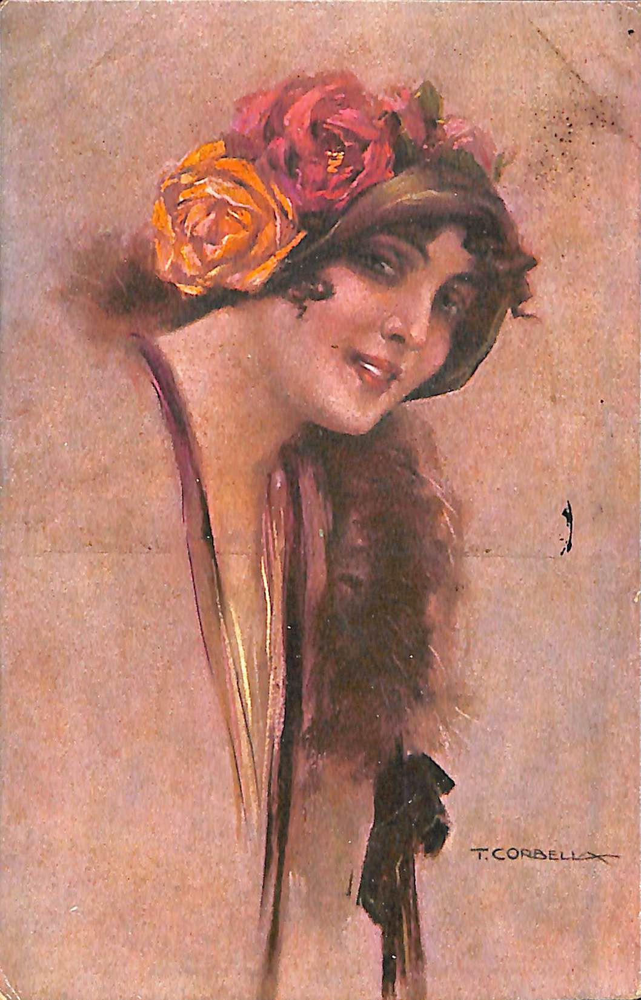
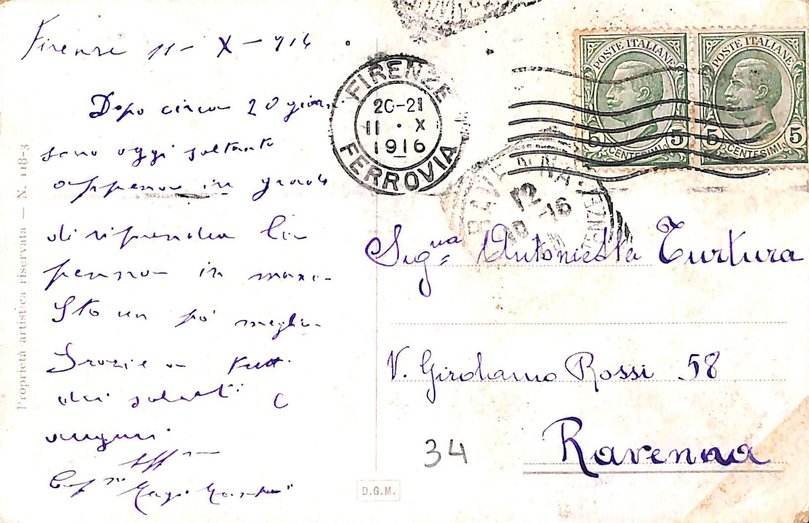
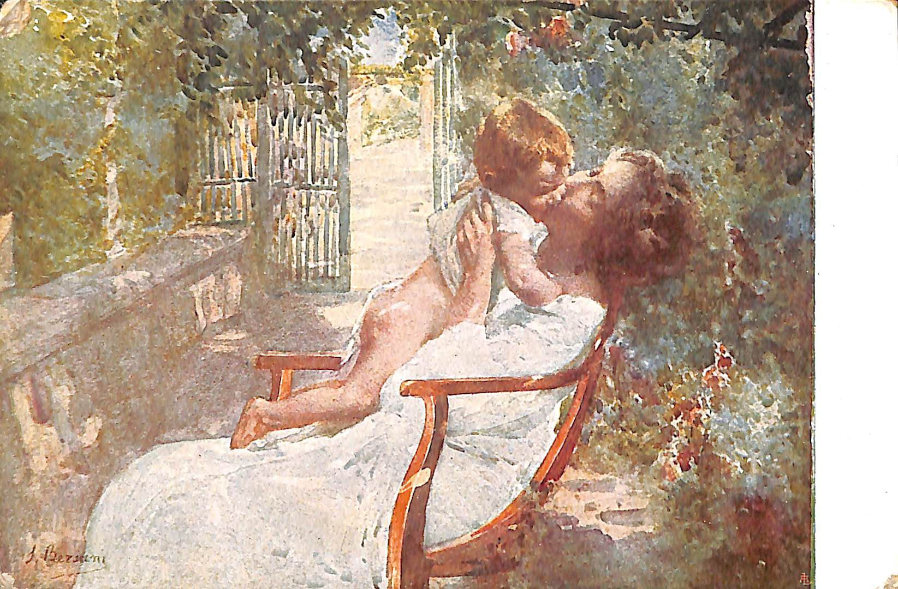
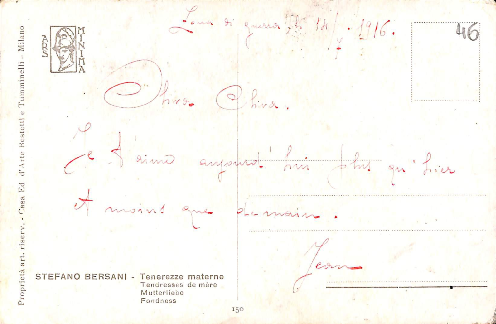
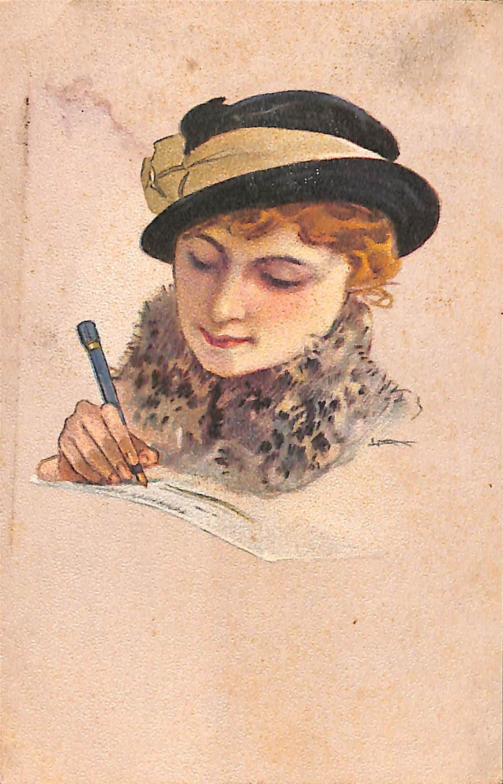
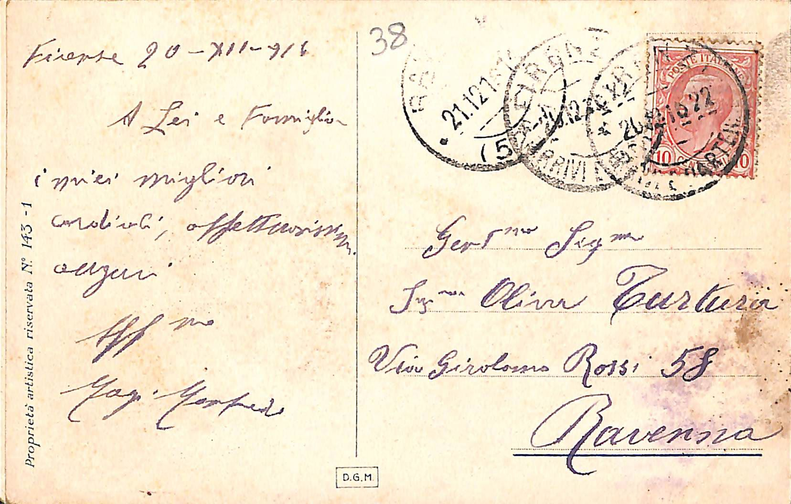

Progetto di Codifica di testi 2018/2019
Mario Gomis And Mirko Morici
Cartolina 7694-034
Cartolina 7694-046
Informatica Umanistica
Cartolina 7694-038
Cartoline codificate
Cartolina 7964-034

Codifica :
Firenze
11-X-914
Dopo circa 20 giorni
sono oggi stato
appena in grado
di riprendere la
penna in mano.
Sto un po meglio
Grazie a tutti
dei saluti
Affett.
Affettuosissimi
Giuseppe Magi Morfede
Firenze 20-21 X 1916
Sign
Signorina
Antonietta Turtura
V.
Via
Girolamo Rossi 58
Ravenna
Francobolli utilizzati nella crtolina :
Poste italine 5 centesimi
Poste italiane 5 centesimi
Descrizione immagine :
L'immagine della cartolina raffigura una donna, mezzo busto, che sorride. La donna ha dei capelli mossi castani,
indossa un cappello con ornao da due grossi fiori, un giallo e uno rosso, e da altri due fiori più piccoli color
rosa. Sul corpo indossa un abito color viola con sopra quella che pare essere una pelliccia.
In basso a destra vi è la firma dell'artista.
Cartolina 7694-046

Codifica :
Loma di guerra li
14 7 1926
je t'aime aujourd'hui plus qu'hier
et moins de demain.
Jean
Descrizione immagine :
L'immagine del fronte della cartolina presenta una donna vestita di bianco, seduta su di una sedia che
bacia un bambino. Le figure sono immerse in quella che sembra essere l'etrata che di una villa di campagna,
circondata dalla natura.
Cartolina 7694-038

Codifica :
Firenze 20-XII-916 A lei e famiglia i miei migliori cordiali affettuosissimi auguri Alfonso
Magi Morfede
Francobolli utilizzati nella cartolina :
scritture dentro al timbro
1916/12/21
Francobollo da 5 centesimi del Regno d'Italia
Gentssa.
Gentilissima
Signa.
Signorina
Signa.
Signorina
Olivia Turtura
Via G.Rossi 58
Ravenna
Descrizione dell'immagine :
La Signora indossa un cappellino nero con una fascia di colore argento indossato come un fiocco,I capelli della signora sono di colore dorato e ricciole,Il viso si mostra un po' pallido con gli occhi chiusi e il rosetto alle labbra di colore rosso,La sciarpa si presta con con un mix di colori tra Oro Nero e Viola,In basso a destra e riportato la firma,Tiene nella mano destra una penna di colore blu
Tutte le pagine presenti sono state validate secondo gli standard del W3C, tutte i file xml validati con Xmllint e dalla Tei_all.dtd